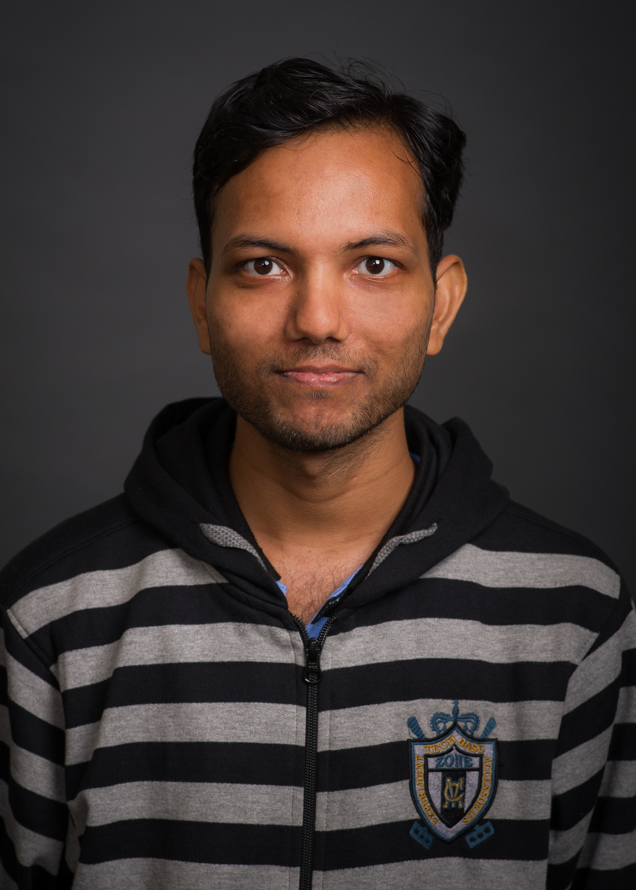

Home

I am a graduate student in the Department of Chemical and Biological Engineering at University of Wisconsin-Madison.
My research focus is multi-scale control, optimization, scheduling and energy systems.
I completed my undergraduate education in 2014 with a Bachelor of Technology (Honours) in Chemical Engineering from Indian Institute of Technology Bombay, Mumbai, India.
After completing my undergraduate degree, I worked for a year as Graduate Engineer Trainee at Reliance Industries Limited, Hazira, India.
For my Ph.D. I am co-advised by
Professor Victor M. Zavala and
Professor Christos T. Maravelias.
Graduate Student
Department of Chemical and Biological Engineering
University of Wisconsin-Madison
1415 Engineering Dr., Engineering Hall Room 2011
Madison, WI 53715, USA
+1-608-770-4128
rkumar32@wisc.edu